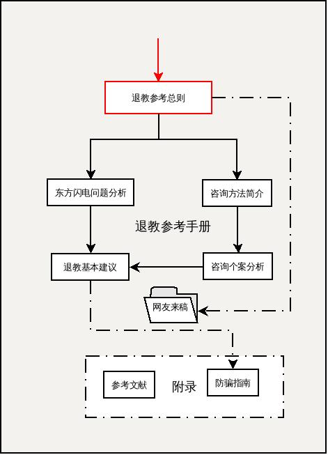

我相信在群星当中有一颗星星，引领我的生命，穿越不可知的黑暗。—— 泰戈尔
退教参考手册 的目的是，助人自救，在有限的条件下帮助受害者家属理清思路，看清问题，对受害者采取合适的干预手法，以致于尽早的摆脱邪教问题带给家庭的负面影响，恢复到正常的生活秩序中去。同时也给不了解东方闪电问题的朋友一些有益的提醒，以帮助未来预防此类问题打下一个良好的基础。如果由此能够唤醒一部分民众走向自我觉醒，那么就是更好的一个收获了。
本人认为，反邪的重点在于防骗，退教的重点前期和中期在于危机干预和心理疏导，后期在于读书提高素质,并且辅以养成良好的生活习惯，保持积极乐观的生活态度，使受害者及其家庭恢复到正常的生活轨道中来，所以退教参考手册也将把重心放在这个方向。
关于东方闪电还有一个问题重点就是防骗，如何提高大多人的防骗意识。
对于这些，本手册在反邪防骗指南中进行了一些必要的收集和整理，都添加在附录中，详见：
附录一：反邪防骗指南
本人尝试以自己的学习生活中的经验,帮助一些朋友来摆脱被东方闪电设局所破坏的尴尬局面.因为自己本身也有一个文化程度,理解能力都不高的母亲,深切知道其中的难办之处.以下尝试整理出来,供大家参考:
救助者初期往往会因为对于问题定义错误，容易将其简单归类为受害者本人犯了某些错误，或者受到网络上信息的误导，并不利于找到问题的解决核心，以致于问题难以有效解决，正确的思路对于有效解决实际问题至关重要。因为从受害者的角度看，他们基本上不会认为自己是在做错事，恰恰相反，他们会把自己做的事情当作非常伟大而且光荣的好事。习惯以情绪做导向，然后树立一个先验的目标或价值观，最后再给其找理由证明正确性。这样做必然容易得到偏狭的结果。或者说，以情绪为导向的人，其目标并不是找到正确的结果，而是为了给自己的情绪发泄找一个合意的突破口。 没有学习到如何运用理性的方法来看待问题，分析问题，解决问题。是此类问题的症结所在。其实这正是我国特殊的国情所决定的，多年封闭填鸭教育的结果，因为民智不开，对于社会的变革适应能力低下，所产生的文革后遗症问题。
特征：容易上当受骗，理性分析能力缺乏。
解决问题：注意不要正面进行冲突，以免问题僵化，常用日常疏导性对话，应该更有益处。有选择的给其播放一些正面信息，帮助其恢复基本理性的判断能力。
注意事项：鉴于各个地区政府的实际办事能力，对于此类问题，主要还是要靠患者家属有足够的觉悟才行。
东方闪电设计的骗局处在阴暗处，让人有难做判断之感，不利于掌握问题的特质，但是当代所有的诈骗集团都是用了类似的套路，我们可以通过类似的已经揭发的骗局中来查看东方闪电类的端倪。例如：传销诈骗、已经被打击的邪教组织。我这里要重点指出的是，邪教的传播形式，往往采用亲友相传的方式方法，往往让人防不胜防。一旦入局，根据其本人的文化素质和性格特征，能够被成功转化，使其能够正确认识到自己上当的几率就比较低，往往会比较难以说服。在这里一方面要了解洗脑的一般方法，还要理解一些基础的心理学常识，这方面往往是当前学校教育的盲区，需要通过自我学习的方式进以补充。
特征：亲友相传，容易说服，心理防御降低。一旦心理防线突破，习惯养成，难以更改。
解决方法：针对问题特点，有必要制作一些常识手册，便于分发给家庭已经有此类问题的朋友加以学习和预防。提高面对问题分析与解决的能力。
注意事项：警惕多年没有走动的亲戚朋友，如果家属属于社会闲散无业状态，要注意她结交的朋友中是否有不良的人员，以免被误导入局。
受害人家庭往往自身存在某些非常现实的生活问题困扰，家庭气氛紧张，受害人身心压力大，有寻求解脱的心理需求。这点要主要依据我国的特殊国情来说，一般东方闪电信徒，多为中老年妇女，这些人生理处在更年期，大多有容易激动、心理有焦虑倾向、容易被暗示等心理特点。根据学者研究发现，在女性生理期间，会改变人的大脑结构（参见女性月經週期對於負向情緒事件自我調控之中樞神經機制）。再加上社会变革带来的大规模结构调整，让其中的文化程度较低的家庭受到比较严重的冲击，失业，下岗，子女就业问题，婚姻危机，社会医疗问题，养老问题等都是这些人之前没有预估到的，所以容易使得焦虑度增加，寻求解脱。给邪教传播创造了有利的环境。诸多因素构成了一个问题，她们如何应对她们正在面临的问题。一个不良的社会结构所导致的问题往往不止这些。
特征：受害人家庭本身也存在诸多问题因素，难以简单归咎受害人。
解决方法：接受问题情况，正面所遇到的诸多挑战，积极寻找解决途径。
当经历过一系列人生打击之后，人往往会比较消极，生活中还存在很多问题和挑战。怎么办？面对和逃避是两种出路，我不能说哪种更好，但是如果选择面对的朋友一定要注意到正确的方法、清楚的认识是非常重要的。邪教问题只是现实问题的掩盖，对于要解决问题的朋友，不但要正视邪教问题，还要将目光放在其问题的根部，现实存在的问题的解决上。只有这样才能一步步的走出困境。而对于存在逃避心理的朋友而言，心理重建则是又一个难题。
一般人碰到这个问题，就会面临找不到合适的单位来解决这个问题，警察会推脱这是综合治理的问题，需要向上级汇报，然后被搁置，甚至如果在网络上发类似的文章会被删贴，中国的反邪教协会也只是做一些宣传预防性质的表面工作，不涉及解决实质性问题。至于医院在碰到这样的病人，则就会开一些治疗精神分裂的药（利醅酮之类），也没有什么进一步的方法。一般人也会躲得远远的。基本上这个问题就变得比癌症还难以处理了。由于政府治理不利，邪教还是在进一步的蔓延，继续侵害人民的利益。
本手册仍处于不断完善中，希望有能力的同学能加入编写退教参考手册的行列。加入方法：直接和本人联系。如有批评、建议和意见，也随时欢迎反馈，或给我发邮件。
退教参考手册各章节分别适合以下人群阅读：
| 篇 | 章 | 受害者 | 受害者家属 | 心理咨询师 | 宗教人士及社工 | 政府有关人员 | 媒体记者 | 社会问题研究者 |
|---|---|---|---|---|---|---|---|---|
| 退教参考总则 | 编制目的 | √ | √ | √ | √ | √ | √ | √ |
| 退教守则 | √ | √ | √ | √ | √ | √ | √ | |
| 重点，难点与疑点 | √ | √ | √ | √ | √ | √ | √ | |
| 基本术语 | √ | √ | √ | √ | √ | √ | √ | |
| 适用范围 | √ | √ | √ | √ | √ | √ | √ | |
| 脉络分析图 | √ | √ | √ | √ | √ | √ | √ | |
| 东方闪电问题分析 | 问题如何产生 | √ | √ | √ | √ | √ | √ | √ |
| 问题如何发展 | √ | √ | √ | √ | √ | √ | √ | |
| 问题如何解决 | √ | √ | √ | √ | √ | √ | √ | |
| 学者观点总结 | √ | √ | √ | √ | √ | √ | √ | |
| 咨询方法简介 | 性格分析 | √ | √ | √ | √ | √ | √ | √ |
| 问题原因分析 | √ | √ | √ | √ | √ | √ | √ | |
| 危机干预 | √ | √ | √ | √ | √ | √ | √ | |
| 心理疏导 | √ | √ | √ | √ | √ | √ | √ | |
| 咨询个案分析 | 常见症状分析 | √ | √ | √ | √ | √ | √ | √ |
| 常见错误思维分析 | √ | √ | √ | √ | √ | √ | √ | |
| 附录 | 防骗指南 | √ | √ | √ | √ | √ | √ | √ |
| 参考文献 | √ | √ | √ | √ | √ | √ | √ |
